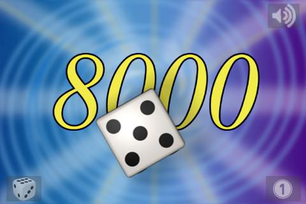
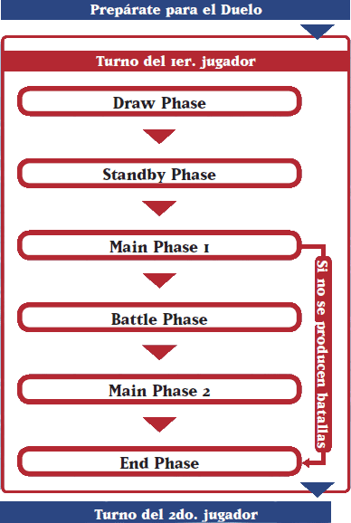
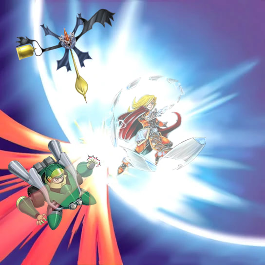
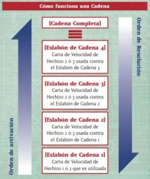

Como se juega
Como tener Duelo y Como ganar
Un duelo único es llamado "Duelo"; un Duelo termina cuando un jugador gana o el juego llega a un empate. Los duelos se juegan en grupos de 3, lo cual se denomina "Match"; y el ganador de 2 de 3 Duelos es el que gana el Match.
Ganar un Duelo
Cada jugador comienza con 8.000 LP (Life Points - Puntos de Vida). Ganas el Duelo si se cumple una de las siquientes condiciones: reduces los LP de tu adversario a 0; tu oponente no tiene más cartas para robar; o si el efecto especial de una carta dice que has ganado. Si tú y tu adversario llegan a 0 LP al mismo tiempo, el Duelo se declara un empate.
Condiciones de Victoria
- Reducir los LP de tu adversario a 0.
- Tu adversario no puede robar una carta cuando debe hacerlo.
- Gana con el efecto especial de una carta.
Preparándote para el Duelo
Antes de comenzar un Duelo, sigue estos 4 pasos. También, asegúrate de tener todos los elementos extra que tu Deck pueda requerir, como monedas o contadores.
- Después de saludar a tu adversario, baraja bien tu deck. Luego puedes barajar y cortar el Deck de tu adversario. (Sé cuidadoso al tocar sus cartas).
- Después de cortar, pon los Decks boca abajo en las Zonas del Deck apropiadas, en el Campo. Si usas un Deck Extra con Cartas de Monstruo XyZ, de Sincronia o de Fusión, pon boca abajo en la Zona del Deck Extra.
- Ambos jugadores deben mostrarse mutuamente sus Side Decks, anotar el número de cartas que contiene, y confirmar que contienen 15 cartas (las cartas deben contarse boca abajo).Si intercambias cartas entre tu Side Deck y tu Deck Principal después de un Duelo, cuenta las cartas de tu Side Deck para mostrarle a tu adversario que todavía tienes la misma cantidad de cartas allí
- Juega "Piedra, Papel o Tijera" o lanza una moneda. El ganador decide quién será primero o segundo en el Duelo. Para tus siguientes Duelos, el perdedor del Duelo anterior es el que decide quiém va primero y quien segundo. Si el Duelo anterior terminó en empate, decidan quién será primero en el Duelo siguiente con otro lanzamiento, etc. Finalmente, roba 5 cartas de la parte superior de tu Deck; esta es tu mano inicial.
Estructura del Turno
Un Duelo progresa en una serie de "turnos" que están divididos en "Phases" (fases).
Draw Phase
Esta es la Primera Phase. El jugador cuyo turno está transcurriendo (el "jugador activo") roba 1 carta de la parte superior de su Deck. Un jugador sin cartas en su Deck y que no puede robar pierde el Duelo. Después de robar, Cartas Trampa o Cartas Mágicas de Juego Rápido pueden ser activadas antes de avanzar a la Standby Phase. IMPORTANTE: El jugador que juega primera no puede robar durante la Draw Phase de su primer turno.
| Acción Principal en esta Phase | Robar 1 carta (excepto durante el primer turno del Duelo, si eres quien comienza a jugar). |
| Otras acciones Posibles | Activar Cartas Trampa, Cartas Mágicas de Juego Rápido, etc. |
Standby Phase
Algunas cartas tienen efectos para activar, o costes que debes pagar en la Standby Phase. Si no tienes ninguna de estas cartas en el Campo, todavía puedes activar Cartas Trampa o Cartas Mágicas de Juego Rápido antes de avanzar a tu Main Phase 1.
| Acción Principal en esta Phase | Resolver efectos de cartas que suceden en esta Phase. |
| Otras acciones Posibles | Activar Cartas Trampa, Cartas Mágicas de Juego Rápido, etc. |
Main Phase I
Aquí es cuando juegas la mayoría de tus cartas: puedes Invocar o Colocar monstruos, cambiar la posición de batalla de un monstruo, activar el efecto de una carta y Colocar Cartas Mágicas y de Trampa. Estas acciones pueden ser llevadas a cabo en cualquier orden que quieras, pero algunas acciones tienen restricciones.
Acciones Posibles
- Invocar o Colocar un Monstruo
- Cambia la Posición de Batalla de tus Monstruos
- No puedes cambiar la posición de batalla de un monstruo que fue jugado en el campo este turno.
- No puedes cambiarlo en la Main Phase 2 si el mosntruo atacó durante la Battle Phase.
- No puedes cambiarlo si has cambiado ya su posición de batalla una vez en este turno.
- Activar una Carta o Efecto
- Colocar Cartas Mágicas y Cartas Trampa
No hay límite a la cantidad de veces que puedes realizar una Invocación por Volteo o Especial durante un turno, pero sólo puedes hacer 1 Invocación Normal o Colocar un monstruo (esto incluye a las Invocaciones por Sacrificio) una vez por turno.
Esto incluye Invocar un monstruo por Volteo, o cambiar la posición de un monstruo boca arriba a Posición de Ataque o Defensa boca arriba. Puedes cambiar la posición de cada monstruo que controles, excepto en tres casos:
Puedes activar una Cartas Mágicas o Trampas, o los efectos de Cartas Mágicas, Trampa o de Monstruos de Efecto tantas veces como quieras durante esta Phase, siempre que puedas pagar los costes que puedan requerir.
Puedes colocar Cartas Mágicas y Trampa boca abajo en tu Zona de Magia y Trampas durante esta Phase, siempre que tengas espacio para ello.
Battle Phase
¡Ahora es el momento de batallar con tus Cartas de Monstruos! Esta Phase se divide en pasos llamados "Steps". No estás obligado a realizar una Battle Phase cada turno, aunque tienes un mons en el campo. IMPORTANTE: El jugador que juega primero no puede realizar su Battle Phase en su primer turno.
- Acciones Posibles en esta Phase
- Start Step
- Battle Step
- Damage Step
- End Step
Batallar con monstruos Activar Cartas Trampa y Cartas Mágicas de Juego Rápido
Flujo de la Battle Phase
La Battle Phase se divide en 4 pasos llamados "Steps" y se lleva a cabo en el orden que muestra el diagrama. El Battle Step y el Damage Step son repetidos cada vez que atacas con un monstruo.
Este paso inicia la Battle Phase. El jugador activo debe anunciar: "estoy comenzando mi battle Phase". Recuerda, el jugador que juega primero no puede realizar una Battle Phase en su primer turno.
Selecciona 1 monstruo de tu Campo con el cual atacar y 1 de los monstruos de tu adversario como tu objetivo de ataque, y declara el ataque. Si tu adversario no tiene monstruos en su Campo puedes atacarlo directamente. El juego procede entonces al Damage Step. Después de que éste sea resuelto, el jugador atacante regresa al Battle Step y repite este procedimiento. A cada monstruo en Posición de Ataque boca arriba que controlas les es permitido 1 ataque por turno. Tus monstruos no tienen que atacar si no quieres que lo hagan.
En este paso los jugadores calculan el resultado de la batalla y cuanto daño (si lo hay) se hace. Después de terminar el Damage Step, regresa al Battle Step.
Después de que hayas resuelto todas tus batallas, repitiendo la secuencia Battle y Damage Steps, y ya no tengas más monstruos con los que quieras atacar, anúnciale a tu adversario que estás terminando tu Battle Phase.
Main Phase 2
Si realizaste una Battle Phase, tu turno avanza luego a la Main Phase 2. Las acciones que un jugador puede realizar en esta Phase son las mismas que en la Main Phase 1. Sin embargo, si el jugador ya realizó una acción en la Main Phase 1 que tiene un límite en la cantidad de veces que puede ser ejecutada, el jugador no puede hacerla de nuevo en la Main Phase 2. Considera si quieres activar y Colocar Cartas Mágicas y Trampa, o Invocar o Colocar un monstruo (si no lo hiciste en la Main Phase 1) basado en tu situación después de tu Battle Phase. Usa esta Phase para prepararte para el turno de tu adversario.
Acciones Posibles en esta Phase
- Invocar o Colocar un monstruo.
- Cambiar las posiciones de batalla de tus monstruos.
- Activar una carta o efecto.
- Colocar Cartas Mágicas y Cartas Trampa.
End Phase
Anuncia el final de tu turno, y si hay alguna carta en el Campo que diga "...durante la End Phase..." en su texto, resuelve esos efectos en esta phase. Si tienes más de 6 cartas en tu mano al final de esta phase, selecciona y descarta cartas al Cementerio hasta que solo tengas 6 cartas en tu mano.
| Acciones en esta Phase | Resolver efectos de cartas que se activan en esta phase. Descartar si tienes más de 6 cartas en la mano |
| Otras acciones Posibles en esta Phase | Activar Cartas Trampa y Cartas Mágicas de Juego Rápido |
Cadenas y Velocidad de Hechizo
¿Qué es una cadena?
Una "Cadena" es un modo de ordenar la resolución de efectos múltiples de cartas. Se utilizan cuando los efectos de más de una carta son activados a la vez, o cuando un jugador quiere usar un efecto después de haber jugado una carta, pero ANTES de que la carta tuviera algún efecto en el juego. Si el efecto de una carta es activado, el adversario siempre tiene la oportunidad de responder con una de sus cartas, creando así una Cadena. Si tu adversario responde con un efecto, puedes elegir si vas a responder y añadir otro efecto a la Cadena. Si tu adversario no responde, tu mismo puedes activar un efecto secundario, y Encadenar otro efecto a la a la activación de tu propia carta. Ambos jugadores continúan agregando efectos a la Cadena hasta que no quieran hacerlo más, y en ese momento, la Cadena se resuelve en orden inverso, comenzando con la última carta que fue activada. Debes ser cuidadoso de no resolver los efectos de tus cartas antes de preguntarle a tu adversario si quieres crear una Cadena.
Velocidad de Hechizo
Cada tipo de efecto de carta tiene una Velocidad de Hechizo de 1 a 3. Si quieres responder al efecto de una carta en una Cadena, debes hacerlo con un efecto de Velocidad de Hechizo menor que el efecto al que estés respondiendo.
Velocidades de Hechizo
Los efectos Mágicas, Trampa y de Monstruos de Efecto tienen Velocidades de Hechizo diferentes. Las Velocidades de Hechizo van del 1 al 3. Sólo puedes responder con un efecto si su Velocidad de Hechizo es 2 o mayor y tiene una Velocidad de Hechizo igual o mayor del efecto del Eslabón de la Cadena que le anteponia.
- Velocidad de Hechizo 1
- Velocidad de Hechizo 2
- Velocidad de Hechizo 3
Mágicas (Normales, Continuas, de Equipo, de Campo, de Ritual), efectos de Monstruos de Efecto (Encendido, Disparo y Volteo)
Esta es la más lenta. Estas cartas no se pueden activar como respuesta a cualquier otro efecto. Por lo general, estos efectos no pueden ser Eslabón de Cadena 2 o mayor, a menos que los efectos de múltiples Velocidades de Hechizo 1 sean activados simultaneamente.
Cartas Trampa (Normal, Continuas), Mágicas de Juego rápido, Efectos Rápidos de Monstruos de Efecto.
Estas cartas pueden ser usadas como respuesta a efectos de Velocidades de Hechizo 1 o 2 y típicamente pueden ser activados durante cualquier phase.
Trampa de Contraefecto
Esta es la más rápida de todas las Velocidades de Hechizo y puede ser usada como respuesta contra cualquier carta de cualquier Velocidad de Hechizo. Sólo otra carta de Velocidad de Hechizo 3 puede ser usada para responder a estas cartas.
Como funciona una cadena
Como muestra el diagrama de arriba, el primer efecto activado es el del Eslabón de Cadena 1. Después le sigue el efecto del Eslabón de Cadena 2 y así sucesivamente. Cada vez que se crea un nuevo Eslabón de Cadena, éste se apila en el orden en que las cartas son activadas. Una vez que la Cadena está completa, el resultado se determina comenzando con la carta más recientemente activada, arriba de todo de la Cadena, y procediendo hacia abajo hasta el Eslabón de Cadena 1.
Prioridad del jugador activo
El jugador activo siempre tiene Prioridad, o puede escoger si quiere activar ua carta primero, en cada Phase o Step de su turno. Mientras el jugador activo tiene prioridad, el adversario no puede activar cartas o efectos, excepto los efectos que se activan automáticamente, como Efectos de Disparo o Volteo.
El jugador activo puede:
- Utilizar su Prioridad para actuvar una carta o activar un efecto.
- O pasar la Prioridad al adversario para que pueda activar un efecto.
El jugador debe pasar la Prioridad a su adversario al avanzar a la siguiente pahse o step. Estrictamente, deberías declarar siempre que estás pasando la Prioridad antes del final de cada phase o step, y preguntar al adversario si quiere jugar una carta. Para hacer más sencillo el juego, anunciar el final de sus phases o steps implica pasar la Prioridad. Entonces, cuando se anuncia el final de la phase, tu adversario puede decir "Antes del final de tu phase, activo esta carta" y utilizar una carta.
- El jugador activo empieza con Prioridad para activar una carta o efecto primero.
- Después de la activación de una carta, y al final de cada phase op step, la Prioridad pasa al adversario.